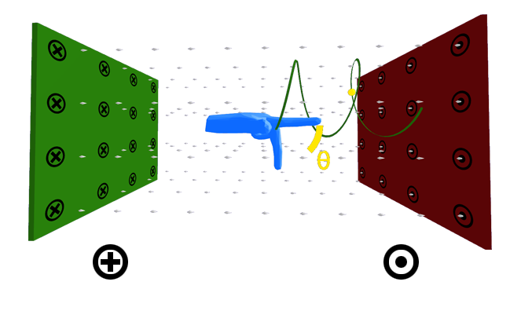

Questão 1:
1. [MED-ITAJUBÁ]
I. Uma carga elétrica submetida a um campo magnético sofre sempre a ação de uma força magnética.
II. Uma carga elétrica submetida a um campo elétrico sofre sempre a ação de uma força elétrica.
III. A força magnética que atua sobre uma carga elétrica em movimento dentro de um campo magnético é sempre perpendicular à velocidade da carga.
Aponte abaixo a opção correta:
a) Somente I está correta.
b) Somente II está correta.
c) Somente III está correta.
d) II e III estão corretas.
e) Todas estão corretas.
Resposta:
A afirmação I está incorreta pelo fato de a carga elétrica nem sempre sofrer ação de uma força magnética. Para uma carga elétrica lançada paralelamente as linhas de campo a força magnética será nula.
A afirmação II está correta, pois cargas elétricas lançadas em campos elétricos sempre sofrem a ação de uma força elétrica.
A afirmação III está correta, pois a força magnética é sempre perpendicular à velocidade da carga. Essa comprovação pode ser realizada através da regra do tapa.
RESPOSTA: d)
Questão 2:
2. [PUC]
Um elétron num tubo de raios catódicos está se movendo paralelamente ao eixo do tubo com velocidade 107 m/s. Aplicando-se um campo de indução magnética de 2T, paralelo ao eixo do tubo, a força magnética que atua sobre o elétron vale:
a) 3,2 . 10-12N
b) nula
c) 1,6 . 10-12 N
d) 1,6 . 10-26 N
e) 3,2 . 10-26N
Resposta:
Como o campo magnético é paralelo a velocidade do elétron, então o ângulo entre eles será zero. Logo, pela fórmula da força magnética, temos que seu valor também será nulo.
RESPOSTA: b)
Fonte: https://www.todoestudo.com.br/fisica/forca-magnetica
Vídeos sobre resoluções de exercícios:
https://www.youtube.com/watch?v=XieWEpsu5ZQ
https://www.youtube.com/watch?v=qgGiDKQxm7Q
Controles da tela inicial
Mouse
Touch
Trabalho de representação interativa e tridimensional da regra da mão esquerda em forças magnéticas sobre cargas. Desenvolvido para o auxílio no entendimento espacial da ação de forças magnéticas sobre cargas em movimento.
Uma parceiria entre a Pontifícia Universidade Católica de Minas Gerais e o Colégio CEPOC de Poços de Caldas.
Autores:
André Fonseca de Paiva
Angelica dos Santos
Fernando Thales Pereira
João Victor Zanolli Crespo
Thiago Junio Saraiva
Orientadores:
Prof. Fabiano Costa Teixeira
Prof. João Carlos de Moraes Morselli Junior
Prof. Rodrigo

Última atualização: 10/12/2020